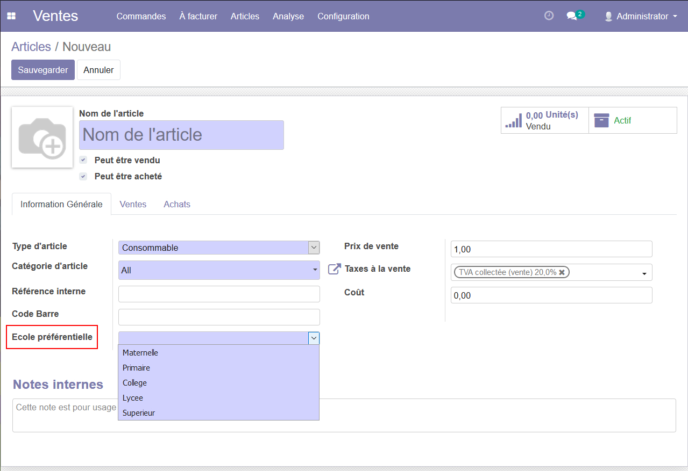

SchoolInc : School Category
Présentation
L'entreprise SchoolInc vous présente son nouvel addon pour l'ERP Odoo : "School Category". Il permet, à la création d'une nouvelle fourniture scolaire, de lui attribuer une "Ecole préférentielle" afin de faciliter l'élaboration et la lecture de futures commandes. Cette information est ainsi visible sur tous les rapports en PDF des devis et des factures (pour d'éventuelles impressions).

Utilisation du module
Rendez-vous sur le site suivant : Odoo SchoolInc
Connectez-vous avec les identifiants d'administrateur.
En cliquant sur le menu déroulant dans le coin supérieur gauche,
choisissez le module "Ventes". Cliquez enfin sur l'onglet
"Articles" pour afficher la page de création d'articles.
Ici, vous pourrez choisir l'Ecole préférentielle qui correspond le mieux
à votre nouvel article (le choix d'une catégorie est obligatoire).
Cette catégorie figurera automatiquement sur les PDF de tous les devis et toutes les factures comportant de tels articles. Vous trouverez plus d'informations et d'exemples à ce sujet dans la section Scénario d'utilisation de cette documentation.
Maintenance du module
Connexion au serveur Odoo
Ouvrez un invité de commandes sur Windows ou un terminal sur Linux.
Assurez-vous que ssh soit installé sur votre machine et entrez la commande suivante :
ssh gr2@46.4.237.53
Validez le mot de passe. Vous êtes à present connecté au serveur. Si le site n'est pas en ligne, démarrez-le avec la commande suivante :
~/odoo/odoo-bin --addons-path="~/odoo/addons" -d SchoolInc -i school_category
Pour accéder au répertoire de l'addon, écrivez ceci :
cd odoo/addons/school_category
Le contenu de ce répertoire est aussi disponible sur le github du projet.
Architecture du module
Cet addon a pour but de modifier des modules existants. L'architecture et le code se base donc sur la localisation et le ciblage des différents éléments à modifier.
__init__.py # Import du répertoire models
__manifest__.py # Dépendances et import des views
models/ # Répertoire de modification de base de données
__init__.py # Import des models d'origine à modifier
product_template.py # Insertion du champ "school_category" dans le modèle "product_template"
views/ # Répertoire de modification des vues
report_invoice_document.xml # Insertion du champ "Ecole préférentielle" dans le report "facture"
report_saleorder_document.xml # Insertion du champ "Ecole préférentielle" dans le report "devis"
school_category.xml # Insertion du champ "Ecole préférentielle" dans le formulaire de création
reports/
school_category_report.xml #Création d'un report sur le pourcentage d'occurence de chaque catégorie
(Le fichier reports/school_category_report.xml n'est pas fonctionnel)
Modification d'un modèle
Ci-dessous le code de product_template.py
from odoo import fields, models
class ProductTemplate(models.Model):
_inherit = 'product.template'
school_category = fields.Selection([('m','Maternelle'), ('p','Primaire'),('c','College'),
('l','Lycee'),('s','Superieur')],'Ecole préférentielle', required=True)
Le nom de la classe doit être celui de la classe d'origine. On précise également
le nom du modèle d'origine dans la variable _inherit.
On déclare ensuite le nouveau champ en précisant son type et ses différentes options.
Modification d'une vue
On peut prendre comme exemple le code de school_category.xml
<?xml version="1.0"?>
<odoo>
<record id="product_template_form_view_extend" model="ir.ui.view">
<field name="name">product.template.schoolcat</field>
<field name="model">product.template</field>
<field name="inherit_id" ref="product.product_template_form_view"/>
<field name="arch" type="xml">
<xpath expr="//field[@name='categ_id']" position="after">
<field name="school_category"/>
</xpath>
</field>
</record>
</odoo>
Après l'attribution d'un ID et d'un nom à la nouvelle vue, on indique le modèle utilisé
pour l'insertion de notre champ et l'ID de la vue "mère" à modifier. On utilise
alors une balise xpath pour cibler précisément l'emplacement du nouveau champ.